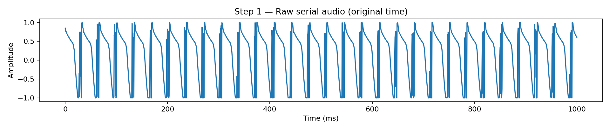
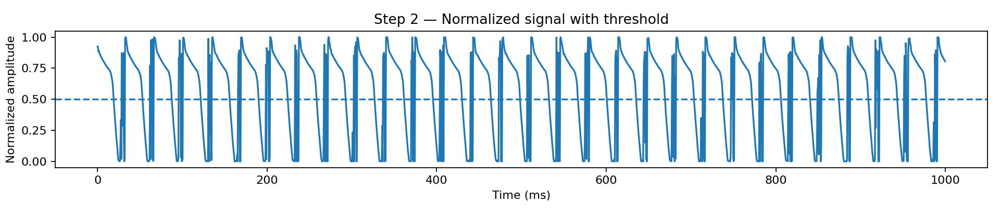
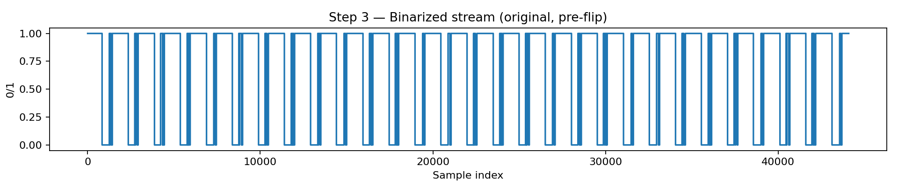
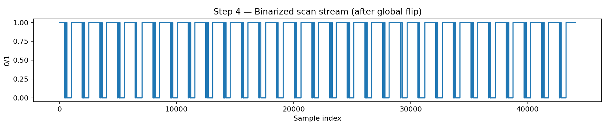
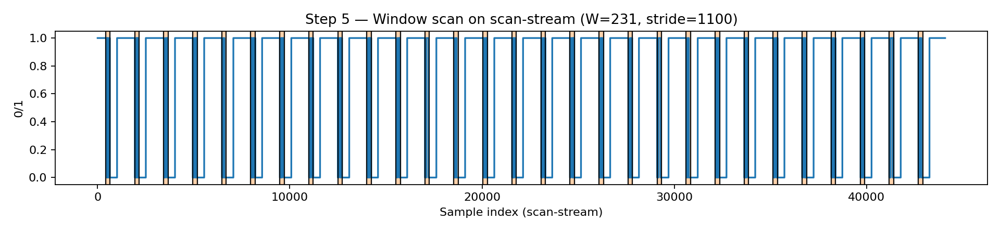
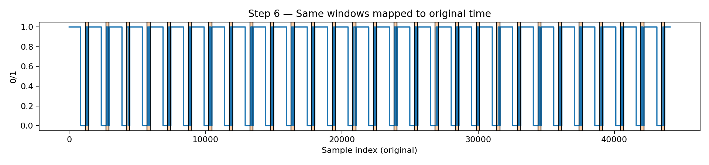
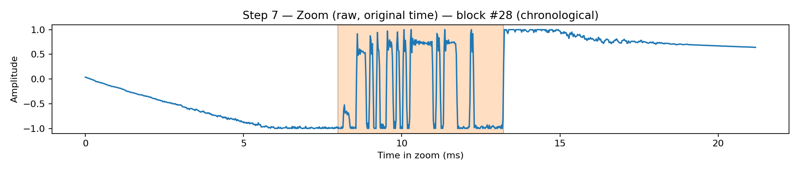
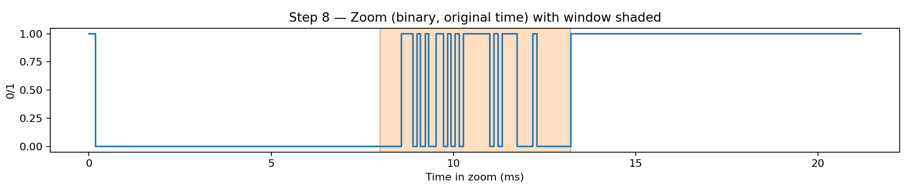
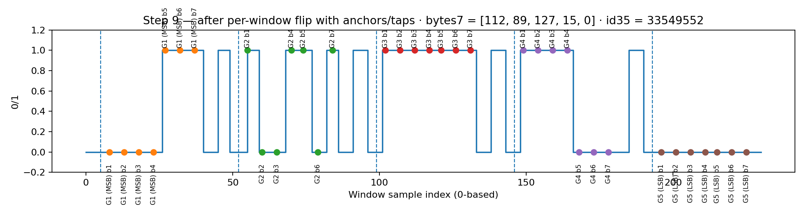

Decoding Serial from Audio — NBU Lounge Example
This decoder extracts serials sent from Arduino embedded in a dedicated serial audio track.
Example clip: recorded in
nbu_lounge(source:TRBD002_08062025-03.mp3, path on Elias:/mnt/datalake/data/TRBD-53761/TRBD002/NBU/2025-08-07/audio/lounge/TRBD002_08062025-03.mp3, clipped with a 1-second window and converted to WAV for plotting).
Why we flip the entire sequence first (the key idea)
Detecting a reliable start-of-block is easier if we conceptually "look from the end." Empirically, when scanning backward on the original stream, the drop to 0 marks the block start (payload comes first, then padding).
To keep the scan simple, we globally flip the binary stream once, scan forward in that flipped space, then map indices and ID order back to the original timeline.
Per-window flips (if enabled by the site preset) are only to ensure each sampled byte is read MSB → LSB.
High-level algorithm (pseudocode)
1) Read audio (wav/mp3) → mono float32 in [-1..1]
2) Normalize to [0,1]; threshold → binary stream (0/1)
3) Global flip (reverse entire binary stream):
Rationale: scanning forward on the flipped stream is equivalent to
scanning backward on the original and makes detecting block starts easy.
4) Scan the flipped stream:
while i + W <= N:
if stream[i] == 0:
win = stream[i : i + W]
if flip_window: win = reverse(win)
# Sample 5 anchors × 7 taps each
# Interpret taps MSB→LSB to get 5 values in [0..127]
# Concatenate b5‖b4‖b3‖b2‖b1 → one 35-bit frame ID
record (ID, start=i, end=i+W)
i += stride
else:
i += 1
5) Map ranges back to original timeline and reverse the list of IDs/ranges
so outputs are chronological.
6) Write CSV: serial,start_sample,end_sample
Visual tour: from raw wave to 35-bit IDs
The figures below are produced by
scripts/tools/make_serial_plots.pyand saved under
../../assets/serial/.
1) Raw serial audio (overview)
Short “bursty” plateaus carry the embedded bits.

2) From wave to binary
Normalize to [0,1] and pick a threshold (default 0.5):

Then binarize to get the decoder’s 0/1 stream (original, pre-flip):

3) Global flip (why & effect)
We reverse the entire 0/1 stream so that the first 0 we see while scanning forward corresponds to a start-of-block (equivalently: scanning backward on the original and firing on 1→0 drops).

4) Window selection on the scanning stream
Take windows of length W (site-specific; for nbu_lounge we use 231) and hop by stride ≈ 1100.

5) Same windows mapped back to original time
For intuition, the same windows (starts/ends) shown on the original (pre-flip) axis:

6) Zoom one decoded block (original time)
Zoom around a specific chronological block (by index), shading the exact sampling window:

Zoomed binary view of the same region:

7) Inside the window: anchors, taps, and bit order
The actual window used for sampling (after optional per-window flip to guarantee MSB→LSB).
We annotate 5 groups (anchors) × 7 taps each (dots), labeling G1 (MSB) through G5 (LSB) and listing the computed 7-bit byte values plus the concatenated 35-bit ID. The bits are sampled based on empirical anchor points and offsets (counting backwards). Across NBU sleep room, NBU lounge, and Jamail, we use anchors=[6, 53, 100, 147, 194] and offsets=[4, 9, 14, 19, 23, 28, 33, 37] but we only sample the first 7 bits.

MSB vs LSB — how bits become numbers
- MSB (Most Significant Bit): left-most bit (largest weight).
- LSB (Least Significant Bit): right-most bit (smallest weight).
Example 7-bit pattern (MSB→LSB): 1 0 1 1 0 0 1
Value = 1·2^6 + 0·2^5 + 1·2^4 + 1·2^3 + 0·2^2 + 0·2^1 + 1·2^0 = 89.
The decoder explicitly orders taps MSB→LSB.
Preset + constants for nbu_lounge (empirical)
| Parameter | Meaning | Value / Note |
|---|---|---|
site |
Preset selection | nbu_lounge |
W |
Sampling window length | 231 |
stride |
Hop between starts | ≈ 1100 |
| Anchors (1-based) | Fixed positions inside the window | [6, 53, 100, 147, 194] |
| Tap offsets (1-based) | 8 documented; we use first 7 | [4, 9, 14, 19, 23, 28, 33, 37] |
flip_signal |
Reverse entire stream before scan? | True (so “first 0” is start) |
flip_window |
Reverse each window before taps? | True (guarantee MSB→LSB) |
threshold |
Binarization threshold in [0,1] |
0.5 typical (try 0.4–0.6) |
Appendix: expected images (fresh run)
../../assets/serial/
step01_raw.png
step02_normalized.png
step03_binary_preflip.png
step04_binary_scanstream.png
step05_scanstream_windows.png
step06_original_windows.png
step07_zoom_raw.png
step08_zoom_binary.png
step09_window_taps.png